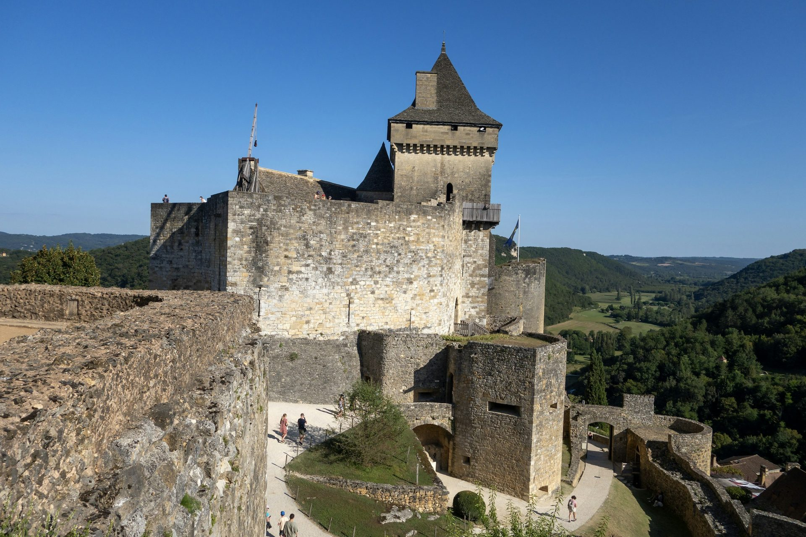
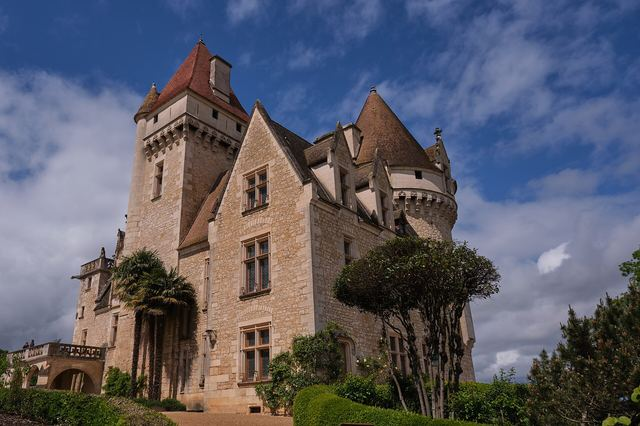
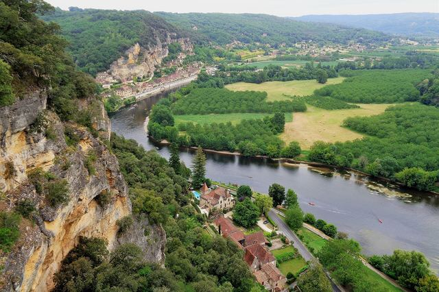
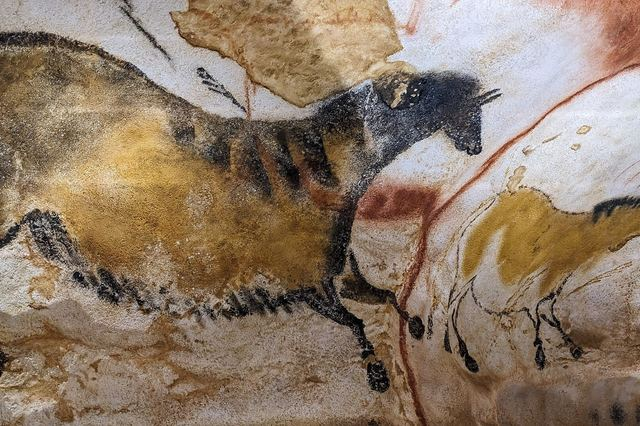

L’Aquitaine, des vignes de Bordeaux aux châteaux de la Dordogne
Une capitale du vin classée à l’Unesco, la plus haute dune d’Europe, des villages de pierre blonde et des châteaux forts perchés au-dessus de la Dordogne.
Photo : snap wander / Unsplash
Côté Gironde, Bordeaux et ses quais, les vignobles de Saint-Émilion et la dune du Pilat, au bord du bassin d’Arcachon, se visitent facilement en quelques jours. Plus à l’est, le Périgord aligne Périgueux, Sarlat et une vallée de la Dordogne semée de châteaux forts et de villages accrochés aux falaises.
Le TGV relie Paris à Bordeaux en un peu plus de deux heures ; pour le Périgord, la voiture reste le plus pratique. Chaque guide vous dit quoi voir, comment y aller et quoi réserver.
Bordeaux et la Gironde


Sarlat et la vallée de la Dordogne
-
 Sarlat
SarlatLa vieille ville en pierre dorée, son marché et l’ascenseur panoramique.
-
 La Roque-Gageac
La Roque-GageacLe village serré entre falaise et Dordogne, ses gabares et son fort troglodytique.
-
 Le château de Beynac
Le château de BeynacLa forteresse au sommet de sa falaise et le village au bord de la Dordogne.
-
 Le château de Castelnaud
Le château de CastelnaudLa forteresse face à Beynac et son musée de la guerre au Moyen Âge.
-

Le château des MilandesLa demeure de Joséphine Baker, ses jardins et ses rapaces.
-

Les jardins de MarqueyssacLes buis taillés à la main et le belvédère sur la Dordogne.
-

LascauxLa réplique intégrale de la grotte, ses chevaux et ses aurochs peints.